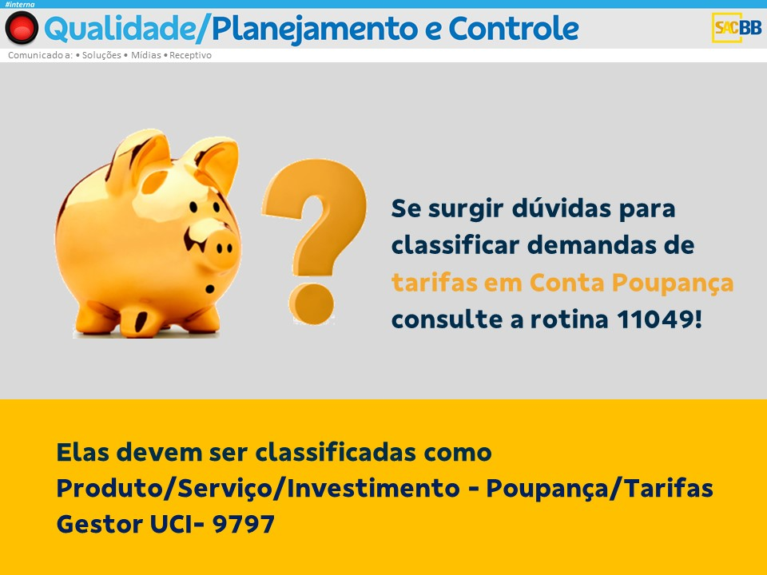

| Número | Onde | Descrição |
|---|---|---|
| 19340 | Portal de Cartão ou informação |
Principal rotina do sac cartão, pois contém as orientações básicas que guiam o atendimento do setor |
| 11049 | Portal de Informação | Rotina de orientações para a classificação do atendimento no BB Atende, seja em FCR ou Ocorrencia |
| 4040 | Portal de Informação | Rotina com orientações sobre o preenchimento do BB Atende, assim como orientações sobre ligação
anônima, cliente falecido, terceiro na ligação, queda de ligação, tudo relacionado ao preenchimento do BB Atende seja em FCR ou Ocorrência |
| 19924 | Portal de Informação | Rotina com os principais procedimentos realizados pelo serviços do SAC INFORMAÇÃO, mas contém
orientações sobre cancelamento de produtos, que é um tema pertinente ao SAC CARTÃO. |
| 10857 | Portal de Informação | Rotina com orientações sobre o script de atendimento do SAC, assim como as orientções sobre a I.P.
(identificação positiva), além de orientar sobre a possibilidade de uma terceiro continuar o atendimento. |
| 10673 | Portal de Informação | Rotina com orientações sobre CÓPIA DE GRAVAÇÃO, fique sempre atento a esta rotina. |
| 9701 | Portal de Informação | Rotina de CÓPIA DE OCORRENCIA, não confundir com cópia de gravação, fique atento! |
| 11033 | Portal de Informação | Rotina com orientações para o registro de reclamação, cancelamento, elogio e sugestão no BB Atende. |
| 21198 | Portal de Cartão | Rotina com orientações sobre falsidade ideológica. |
| 19924 | Portal de informação | Uma das principais rotinas do sac, pois contém as orientações básicas que guiam o atendimento do setor, para diversos assuntos, contendo principalmente os procedimentos a serem adotados. |
| 2170 | Portal de Informação | Rotina sobre Atendimento Contigenciado Rio Grande do Sul e Rio Grande do Norte. |
| 21119 | Portal de Informação | Rotina sobre o Alerta Potencial de Negócios. |
| 9756 | Portal de Informação | Rotina sobre Cancelamento de Empréstimo. |
| 18514 | Portal de Informação | Rotina com orientações sobre a REORGANIZAÇÃO das agências. |
| 9731 | Portal de Informação | Rotina com orientações sobre Cancelamento de Pagamento. |
| 21108 | Portal de Informação | Rotina que trata ENCERRAMENTO de conta. |
| 12340 | Portal de Informação | Rotina sobre ATUALIZAÇÃO CADASTRAL. |
| 9723 | Portal de Informação | Rotina sobre REMESSA DE CARTÃO. |
| 22032 | Portal de Informação | Rotina sobre CHEQUE. |
| 17584 | Portal de Informações | Rotina sobre Cancelamento de Pacote de Serviço. |
Abrir BB Atende, Registar Ocorrência ou Registrar Manifestação, trata-se da mesma coisa, ou seja, o atendimento NÃO SERÁ finalizado em FCR.
IP é o mesmo que Identificação Positiva
Alerta de Relacionamento é uma pendencia gerada pelo banco, de maneira automática quando você classifica o seu atendimento, conforme a rotina 20475 no item 4, esta pendência é encaminhada para o gerente da agencia de relacionamento do cliente.
